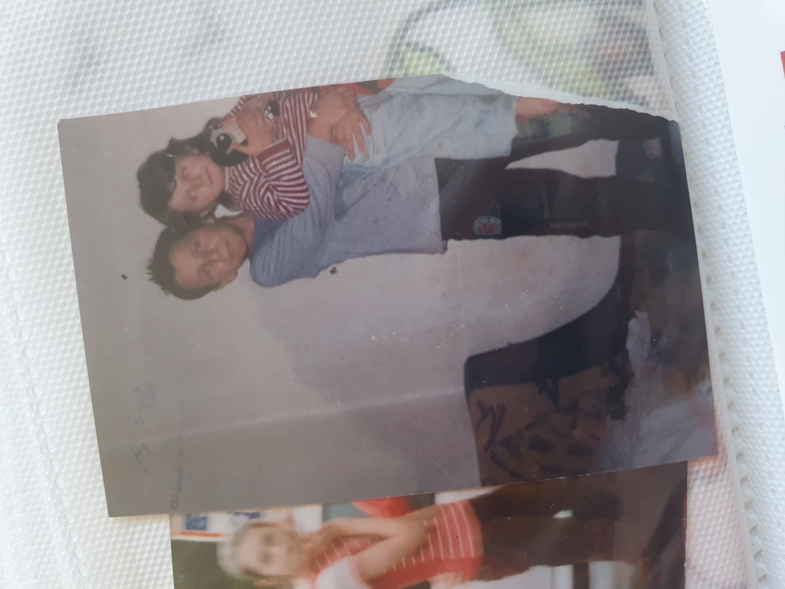
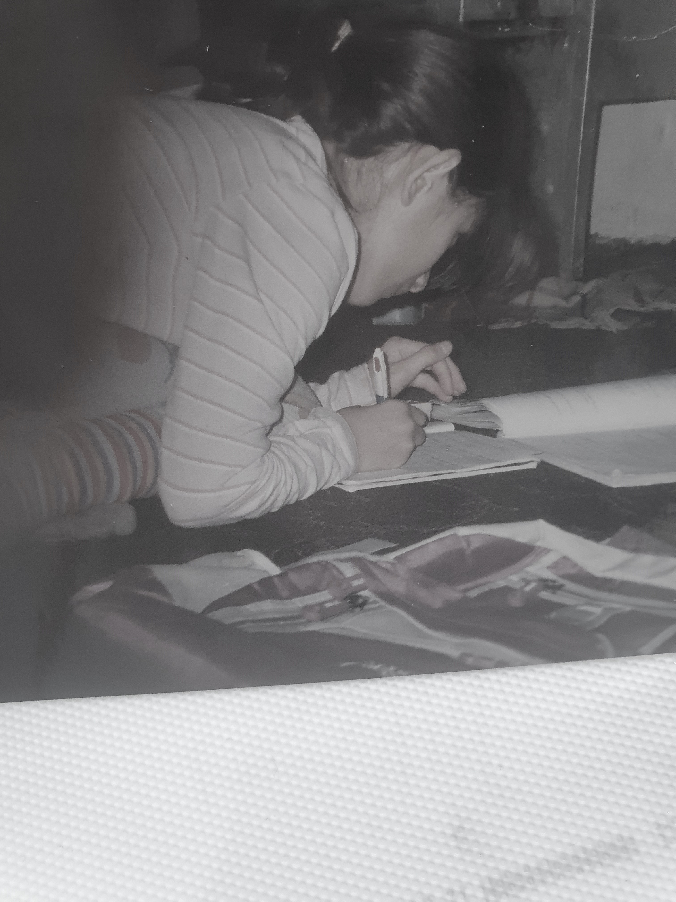
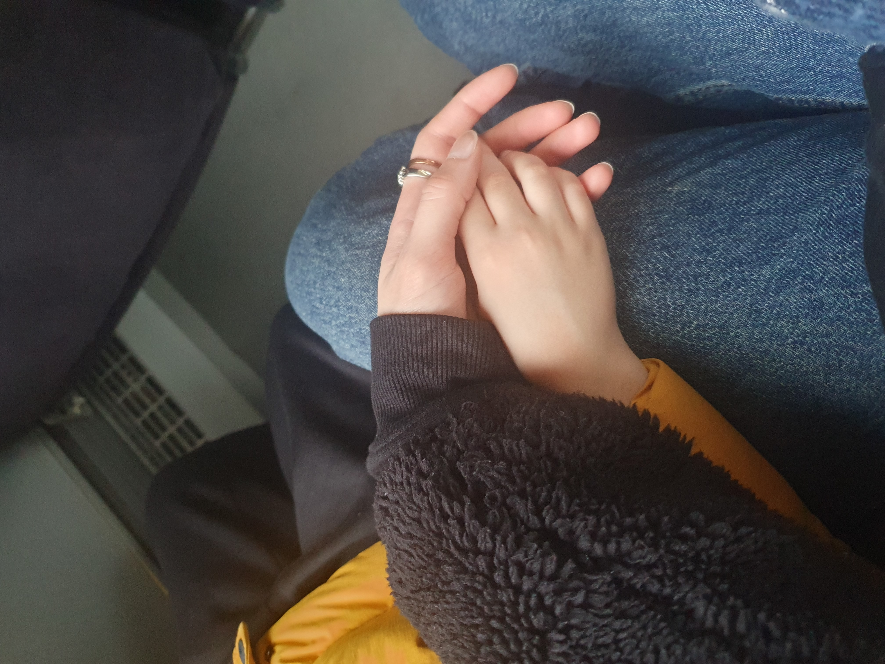
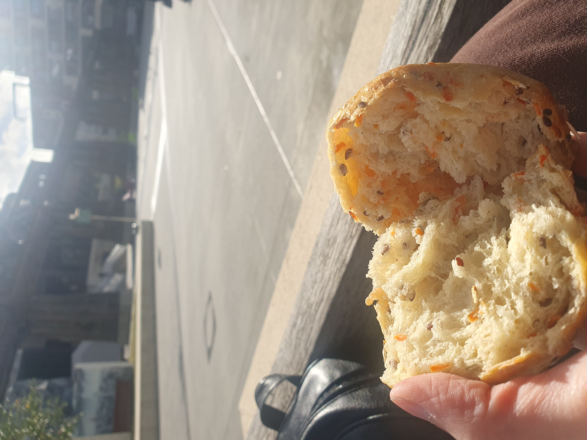
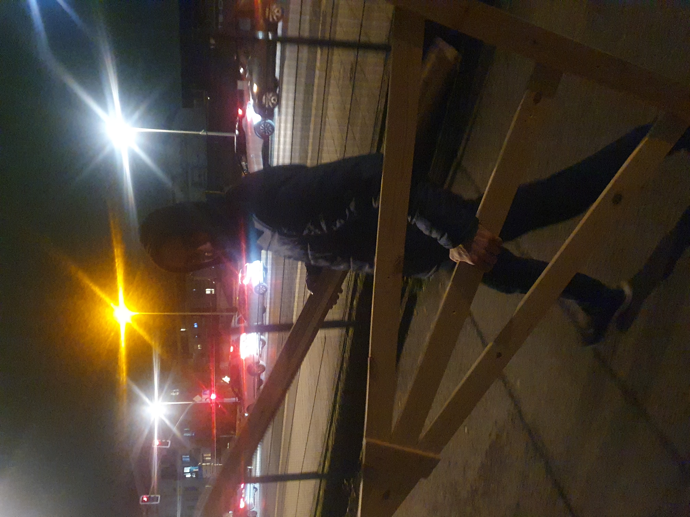
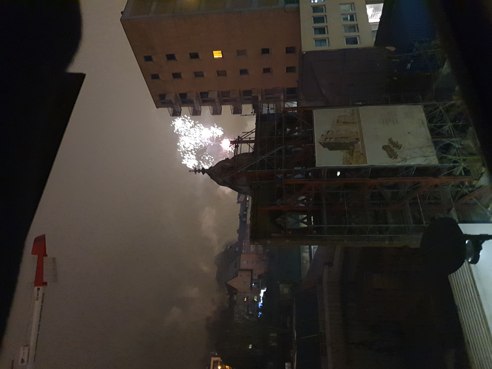
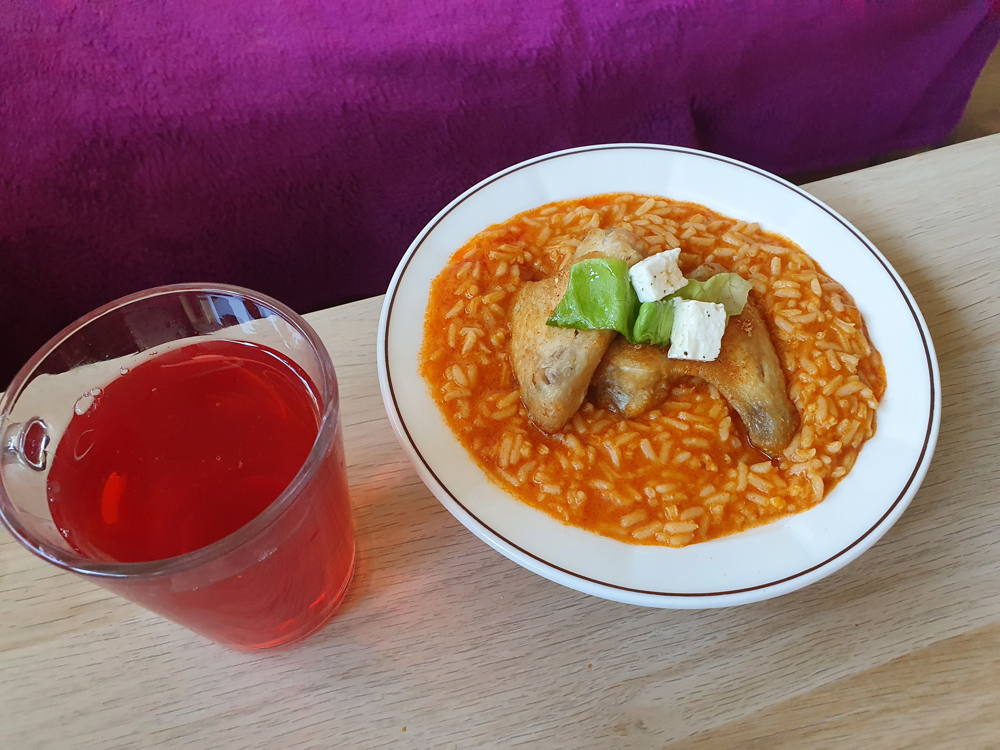

𝚂𝚊𝚖𝚎𝚍𝚒, 𝟷 𝚊𝚘û𝚝 𝟸𝟶𝟷𝟻
« 𝘑'𝘢𝘪 𝘣𝘦𝘴𝘰𝘪𝘯 𝘥'𝘶𝘯 𝘱è𝘳𝘦. 𝘑'𝘢𝘪 𝘣𝘦𝘴𝘰𝘪𝘯 𝘥'𝘶𝘯𝘦 𝘮è𝘳𝘦. 𝘑'𝘢𝘪 𝘣𝘦𝘴𝘰𝘪𝘯 𝘥'𝘶𝘯 ê𝘵𝘳𝘦 𝘱𝘭𝘶𝘴 â𝘨é, 𝘱𝘭𝘶𝘴 𝘴𝘢𝘨𝘦, 𝘢𝘶𝘱𝘳è𝘴 𝘥𝘦 𝘲𝘶𝘪 𝘱𝘭𝘦𝘶𝘳𝘦𝘳. 𝘑𝘦 𝘱𝘢𝘳𝘭𝘦 à 𝘋𝘪𝘦𝘶, 𝘮𝘢𝘪𝘴 𝘭𝘦 𝘤𝘪𝘦𝘭 𝘦𝘴𝘵 𝘷𝘪𝘥𝘦 (...) » - 𝘚𝘺𝘭𝘷𝘪𝘢 𝘗𝘭𝘢𝘵𝘩 𝙼𝚊𝚖𝚊𝚗, 𝚀𝚞𝚎 𝚙𝚎𝚗𝚜𝚎𝚛𝚊𝚒𝚜-𝚝𝚞 𝚍𝚎 𝚖𝚘𝚒 𝚜𝚒 𝚝𝚞 𝚖𝚎 𝚟𝚘𝚢𝚊𝚒𝚜 𝚖𝚊𝚒𝚗𝚝𝚎𝚗𝚊𝚗𝚝 ? 𝙳𝚎 𝚖𝚘𝚗 ê𝚝𝚛𝚎 ? 𝙳𝚎 𝚖𝚘𝚗 â𝚖𝚎 ? 𝙳𝚎 𝚖𝚎𝚜 𝚕𝚊𝚖𝚎𝚗𝚝𝚊𝚝𝚒𝚘𝚗𝚜 ? 𝙳𝚎 𝚖𝚘𝚗 𝚒𝚖𝚖𝚎𝚗𝚜𝚎 𝚍é𝚜𝚒𝚛 𝚍𝚎 𝚟𝚘𝚒𝚛 𝚕𝚎 𝚓𝚘𝚞𝚛 𝚝𝚘𝚞𝚛𝚗𝚎𝚛 𝚎𝚗 𝚗𝚞𝚒𝚝 𝚊𝚞𝚜𝚜𝚒𝚝ô𝚝 𝚚𝚞𝚎 𝚕𝚎 𝚜𝚘𝚕𝚎𝚒𝚕 𝚜𝚎 𝚕è𝚟𝚎. 𝙳𝚎 𝚌𝚎 𝚛𝚊𝚙𝚙𝚎𝚕 𝚍𝚎 𝚕'𝚊𝚋𝚜𝚎𝚗𝚌𝚎. 𝙳𝚎 𝚌𝚎 𝚟𝚒𝚍𝚎 𝚘ù 𝚕𝚊 𝚕𝚞𝚖𝚒è𝚛𝚎 𝚗'𝚘𝚜𝚎 𝚏𝚘𝚞𝚕𝚎𝚛. 𝚀𝚞𝚎 𝚙𝚎𝚗𝚜𝚎𝚛𝚊𝚒𝚜-𝚝𝚞 𝚍𝚎 𝚌𝚎 𝚜𝚎𝚗𝚝𝚒𝚖𝚎𝚗𝚝 𝚗é𝚋𝚞𝚕𝚎𝚞𝚡 ? 𝙰𝚗𝚌𝚛é 𝚍𝚊𝚗𝚜 𝚖𝚘𝚗 ê𝚝𝚛𝚎 𝚊𝚞 𝚙𝚕𝚞𝚜 𝚙𝚛𝚘𝚏𝚘𝚗𝚍, 𝚙𝚘𝚛𝚝𝚊𝚗𝚝 𝚎𝚗 𝚕𝚞𝚒 𝚕𝚎 𝚙𝚘𝚒𝚍𝚜 𝚍𝚎𝚜 𝚌𝚑𝚊𝚐𝚛𝚒𝚗𝚜 𝚗𝚘𝚗 𝚎𝚡𝚙𝚛𝚒𝚖é𝚜, 𝚙𝚎𝚒𝚐𝚗𝚊𝚗𝚝 𝚕𝚎 𝚌𝚒𝚎𝚕 𝚊𝚟𝚎𝚌 𝚍𝚎𝚜 𝚕𝚊𝚛𝚖𝚎𝚜 𝚍’é𝚝𝚘𝚒𝚕𝚎𝚜 𝚚𝚞𝚒 𝚗𝚎 𝚜𝚌𝚒𝚗𝚝𝚒𝚕𝚕𝚎𝚗𝚝 𝚙𝚕𝚞𝚜. 𝙲𝚎𝚝 𝚎𝚛𝚖𝚒𝚝𝚎 𝚚𝚞𝚒 𝚍é𝚟𝚘𝚛𝚎 𝚕𝚊 𝚌𝚑𝚊𝚒𝚛 𝚝𝚎𝚗𝚍𝚛𝚎 𝚎𝚝 𝚜𝚘𝚞𝚙𝚕𝚎 𝚍𝚎 𝚜𝚘𝚗 𝚏𝚎𝚜𝚝𝚒𝚗. 𝙲𝚘𝚖𝚖𝚎 𝚒𝚕 𝚌𝚛𝚎𝚞𝚜𝚎 𝚎𝚝 𝚜𝚎 𝚝𝚘𝚛𝚍, 𝚌𝚎 𝚜𝚊𝚕𝚊𝚞𝚍, 𝚎𝚝 𝚜𝚎 𝚍é𝚛𝚘𝚞𝚕𝚎 𝚌𝚘𝚖𝚖𝚎 𝚍𝚊𝚗𝚜 𝚞𝚗 𝚋𝚊𝚕 𝚍𝚎 𝚌𝚑𝚊𝚗𝚝 𝚜𝚒𝚗𝚒𝚜𝚝𝚛𝚎, 𝚊𝚕𝚘𝚛𝚜 𝚚𝚞𝚎 𝚕𝚎 𝚖𝚘𝚗𝚍𝚎 𝚌𝚘𝚗𝚝𝚒𝚗𝚞𝚎 𝚍𝚎 𝚝𝚘𝚞𝚛𝚗𝚎𝚛, 𝚌𝚑𝚊𝚚𝚞𝚎 𝚋𝚘𝚞𝚌𝚑é𝚎 𝚘𝚜𝚌𝚒𝚕𝚕𝚎 𝚍𝚊𝚗𝚜 𝚞𝚗𝚎 𝚍𝚊𝚗𝚜𝚎 macabre.

Samedi, 17 janvier 2015
Paranoïa. Notre esprit est notre propre cage. Frère dit que ce sont les murs de cette institution, sa volière. Ce sont ces quatre murs qui tuent son esprit, alors que les jours passent et que les saisons s’envolent en un clin d’œil. Mon frère est un oiseau, dit maman. Un oiseau qui aspire à des cieux qu’il ne peut atteindre, piégé dans les eaux troubles de ces murs peints en un gris terne. Alors que je suis assise, figée dans une chambre froide de cet hôpital, la réalité transperce mon âme. Je prends douloureusement conscience de l’ironie – une vie est un mouvement, alors pourquoi un esprit doit-il être enchaîné à un lit stérile ?

Jeudi, 17 septembre 2015
𝙰𝚞𝚓𝚘𝚞𝚛𝚍’𝚑𝚞𝚒, 𝚝𝚘𝚞𝚜 𝚖𝚎𝚜 𝚊𝚖𝚒𝚜 𝚜𝚘𝚗𝚝 à 𝚕’é𝚌𝚘𝚕𝚎. 𝙲’𝚎𝚜𝚝 𝚕𝚊 𝚛𝚎𝚗𝚝𝚛é𝚎. 𝙲𝚎 𝚗𝚎 𝚜𝚎𝚛𝚊 𝚚𝚞𝚎 𝚖𝚊 𝚌𝚑𝚊𝚒𝚜𝚎 𝚚𝚞𝚒 𝚜𝚎𝚛𝚊 𝚟𝚒𝚍𝚎 𝚍𝚊𝚗𝚜 𝚕𝚎𝚞𝚛 𝚌𝚕𝚊𝚜𝚜𝚎. 𝚂𝚒 𝚜𝚎𝚞𝚕𝚎𝚖𝚎𝚗𝚝 𝚓’é𝚝𝚊𝚒𝚜 𝚌𝚘𝚖𝚖𝚎 𝚎𝚞𝚡. 𝚂𝚒 𝚜𝚎𝚞𝚕𝚎𝚖𝚎𝚗𝚝 𝚓’é𝚝𝚊𝚒𝚜 𝚗é𝚎 𝚒𝚌𝚒, 𝚙𝚎𝚞𝚝 ê𝚝𝚛𝚎 𝚓’𝚊𝚞𝚛𝚊𝚒𝚜 𝚎𝚞 𝚍𝚎𝚜 𝚍𝚛𝚘𝚒𝚝𝚜. 𝙻𝚎 𝚍𝚛𝚘𝚒𝚝 𝚍𝚎 𝚜𝚞𝚒𝚟𝚛𝚎 𝚖𝚎𝚜 é𝚝𝚞𝚍𝚎𝚜. 𝙻𝚎 𝚍𝚛𝚘𝚒𝚝 𝚍𝚎 𝚛ê𝚟𝚎𝚛. 𝙻𝚎 𝚍𝚛𝚘𝚒𝚝 𝚍𝚎 𝚟𝚒𝚟𝚛𝚎. 𝙹’𝚊𝚒 𝚍𝚎𝚜 𝚛ê𝚟𝚎𝚜, 𝚖𝚊𝚖𝚊𝚗. 𝙹𝚎 𝚟𝚎𝚞𝚡 𝚊𝚕𝚕𝚎𝚛 à 𝚕𝚊 𝚏𝚊𝚌. 𝙹𝚎 𝚟𝚎𝚞𝚡 𝚌𝚑𝚊𝚗𝚐𝚎𝚛 𝚕𝚊 𝚝𝚛𝚊𝚓𝚎𝚌𝚝𝚘𝚒𝚛𝚎 𝚍𝚎 𝚖𝚊 𝚟𝚒𝚎. 𝙸𝚕 𝚢 𝚊 𝚚𝚞𝚎𝚕𝚚𝚞𝚎𝚜 𝚖𝚘𝚒𝚜, 𝚖𝚊 𝚟𝚒𝚜𝚊 𝚊 𝚎𝚡𝚙𝚒𝚛é𝚎. - « 𝚅𝚘𝚞𝚜 𝚊𝚟𝚎𝚣 𝟷𝟾 𝚊𝚗𝚜. 𝙳𝚘𝚛é𝚗𝚊𝚟𝚊𝚗𝚝, 𝚟𝚘𝚞𝚜 𝚍𝚎𝚟𝚎𝚣 𝚌𝚑𝚎𝚛𝚌𝚑𝚎𝚛 𝚞𝚗 𝚝𝚛𝚊𝚟𝚊𝚒𝚕 𝚙𝚘𝚞𝚛 𝚙𝚘𝚞𝚟𝚘𝚒𝚛 𝚟𝚒𝚟𝚛𝚎 𝚍𝚊𝚗𝚜 𝚗𝚘𝚝𝚛𝚎 𝚙𝚊𝚢𝚜. », 𝚍𝚒𝚝 𝚕𝚊 𝚖𝚊𝚍𝚊𝚖𝚎 𝚊𝚞𝚡 𝚌𝚑𝚎𝚟𝚎𝚞𝚡 𝚋𝚕𝚘𝚗𝚍𝚜 𝚎𝚝 𝚢𝚎𝚞𝚡 𝚋𝚕𝚎𝚞𝚜 𝚕𝚘𝚛𝚜 𝚍𝚎 𝚗𝚘𝚝𝚛𝚎 𝚎𝚗𝚝𝚛𝚎𝚝𝚒𝚎𝚗 𝚊𝚞 𝙼𝚒𝚗𝚒𝚜𝚝è𝚛𝚎 𝚍𝚎𝚜 𝚊𝚏𝚏𝚊𝚒𝚛𝚎𝚜 é𝚝𝚛𝚊𝚗𝚐è𝚛𝚎𝚜. 𝙴𝚝𝚛𝚊𝚗𝚐è𝚛𝚎𝚜. 𝚅𝚒𝚟𝚛𝚎 𝚍𝚊𝚗𝚜 𝚌𝚎 𝚙𝚊𝚢𝚜. 𝚅𝚒𝚟𝚛𝚎 à 𝚚𝚞𝚎𝚕 𝚙𝚛𝚒𝚡 ? 𝚂𝚞𝚛𝚟𝚒𝚟𝚛𝚎.

Mardi, 29 décembre 2015
Ma sœur, nos rires s'affaiblissent. Aujourd’hui il ne reste plus que l’écho de leur mélodie douce et décolorée. Le temps vole nos jours lumineux contre des jours de tristesse. Le temps vole nos rêves d’enfance contre des rêves de survie. Le temps vole nos espoirs comme il vole les feuilles des branches de ces arbres d’automne.

Thursday, 11th of October 2018
I wake up early every day, before the sun, pull on my boots, and head to the construction site. It’s the only way I know how to provide. I work hard, sometimes even on weekends, but there’s always this nagging feeling I can’t shake. My little boy is growing up so fast. He’s only 7, but every day I see how much he changes, and I’m afraid I’m missing it. I’m building houses, but am I missing the chance to build memories with him? I’m scared that by the time I slow down, he’ll be grown and I’ll have missed it all. I work because I want to give him a good life, but sometimes I wonder if I’m getting the balance wrong. I just hope he’ll know I did it for him, even if it feels like I’m losing time I can never get back.

Lundi, 15 juin 2020
Je me lève chaque matin avant l’aube, et je rentre tellement tard que mon fils est déjà endormi. Quand je pars, il dort encore. Je travaille pour lui, pour lui offrir une vie meilleure, mais je ne le vois presque jamais. Il grandit vite, et moi, je suis toujours épuisé. Il y a dix ans, j’ai quitté mon pays, pensant que cette vie ici serait meilleure. Mais aujourd’hui, je me rends compte qu’elle me prend tout : mon temps, ma santé, mes années. Je n’ai pas le temps de créer des souvenirs avec lui. Le week-end, je suis tellement fatigué, mais je me force à l’emmener dehors, à lui montrer qu’il compte pour moi. C’est la seule fois où je peux être vraiment avec lui. Mais tu sais, c’est dur quand t’es étranger. On te donne les jobs qu’ils ne veulent pas, ceux qui te brisent le corps, ceux qui te mènent à l’hôpital. Et à la fin, tu te demandes si c’est vraiment ça, la vie que tu voulais lui offrir.

Samedi, 31 décembre 2022
Ce soir, je suis seule. C’est Nouvel An, et ma mère est encore en cuisine, pas à la maison, mais dans un restaurant. Elle est cuisinière, et même ce soir, surtout ce soir, elle doit travailler. Pendant que d’autres trinquent, dansent, comptent les secondes avant minuit, elle est derrière les fourneaux, à préparer des plats qu’elle ne mangera pas. Dans notre pays, Nouvel An, c’est comme Noël ici. C’est le moment le plus important de l’année. On se retrouve tous en famille, on prépare des repas pendant deux jours, on met de la musique, on s’habille bien, et on commence l’année ensemble. C’est un moment de bonheur. Mais ici, c’est juste un autre jour où les immigrés doivent travailler pendant que les autres profitent. J’ai 17 ans, et ce soir, je me sens vide. Pas seulement parce que je suis seule, mais parce que j’ai cette boule dans la gorge, de tristesse, de culpabilité aussi. Je vois à quel point ma mère se sacrifie. Elle fait tout pour que j’aie une vie meilleure, mais à quel prix ? Elle ne vit pas. Elle travaille. Tout le temps. Être immigré, c’est un enfer silencieux. T’as pas les mêmes droits, pas la même vie. Et pourtant, on attend de toi que tu fasses semblant. Que tu dises merci, que tu sois reconnaissante, même quand t’as rien. Moi, je veux juste une vie normale. Mais je suis née dans une société qui avait déjà écrit mon histoire avant même que je comprenne comment marcher. Et ce soir, plus que jamais, j’en ressens le poids.
